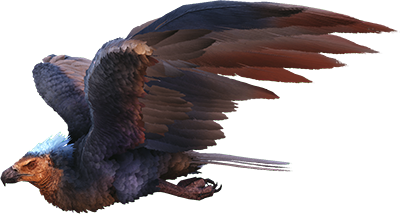

Lording over the skies across the Island, Argentavis atrocollum has few aerial rivals. It is a small consolation for the Island's other avian creatures, then, that Argentavis seems to have little interest in anything alive. Quite apart from what I would have guessed, Argentavis does not have the stooped neck typical of modern buzzards and vultures. I don't know if it adapted this stronger neck to deal with the predators on the Island, or if its lineage derives from before the stooped neck became common in carrion-eating birds. Whichever it meant to be, it has enabled Argentavis to carry smaller creatures with its beak.